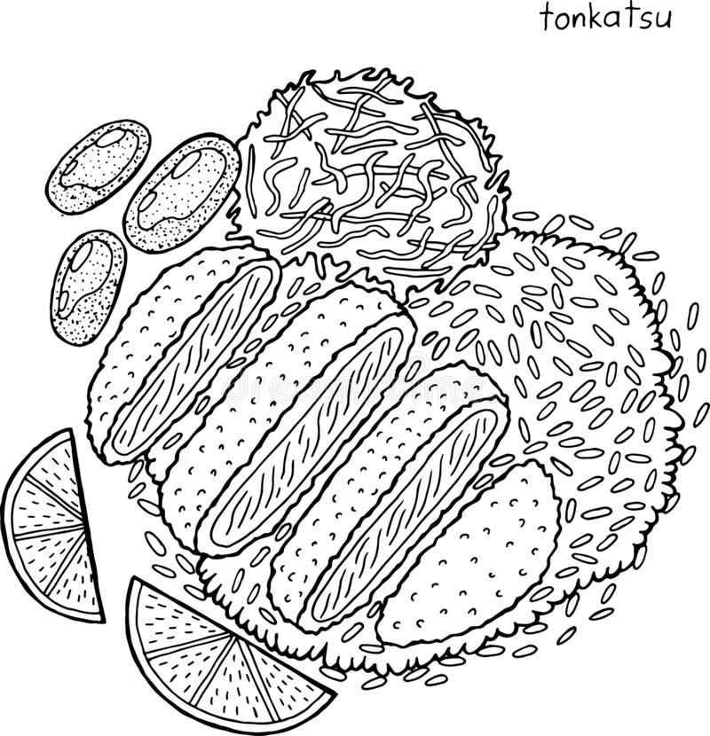

Tonkatsu

Description
Japanese Dish that consists of breaded, deep-fried pork cutlet.
It involves coating pork slices with panko and frying them in oil.
Often served with shredded cabbage and rice
Ingredients
- 2 Boneless Pork Loin
- 3 Cups Vegetable Oil
- 2 Tbsp Flour
- 1 Large Egg
- 0.5 Cup Panko
Directions
- Put a whisked egg, flour, and panko in different bowls
- Dip the pork in flour, egg, then panko
- Heat the oil to 350 Degrees F
- Gently put the piece of pork into oil and cook for 1 minute each side until golden brown